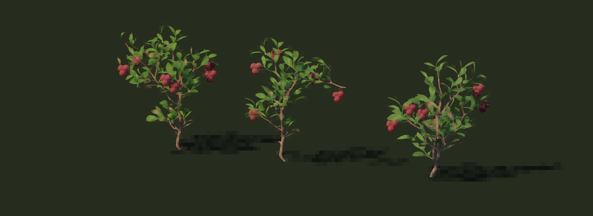
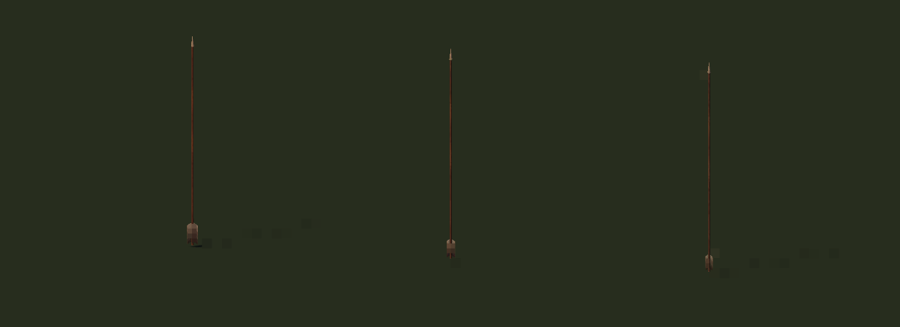
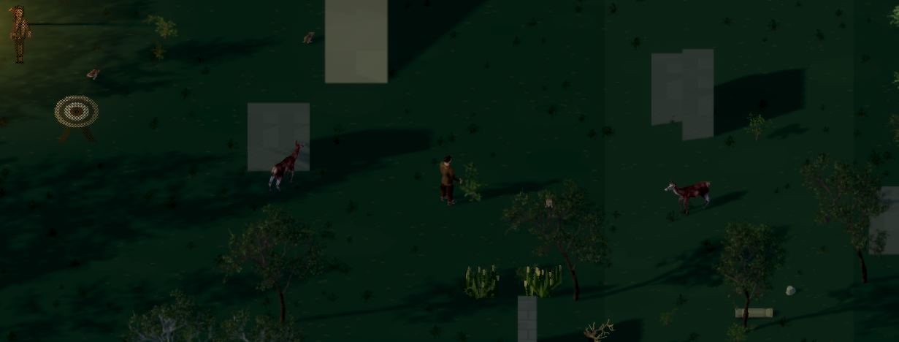
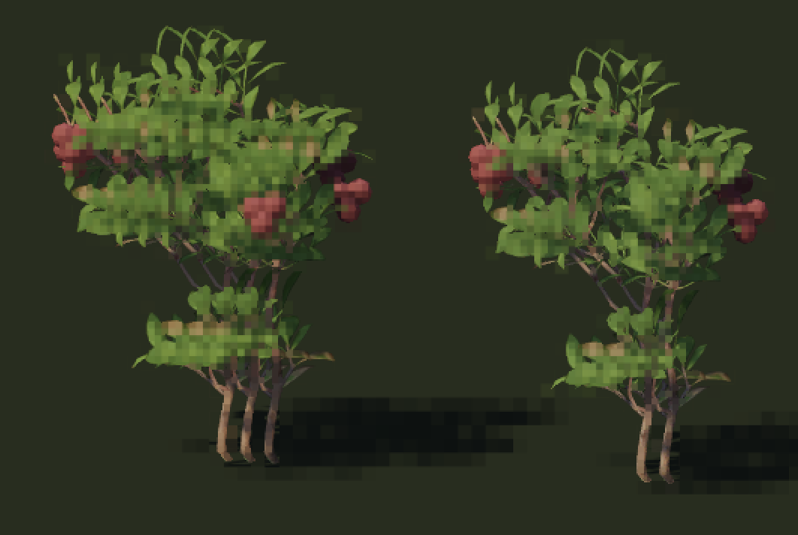
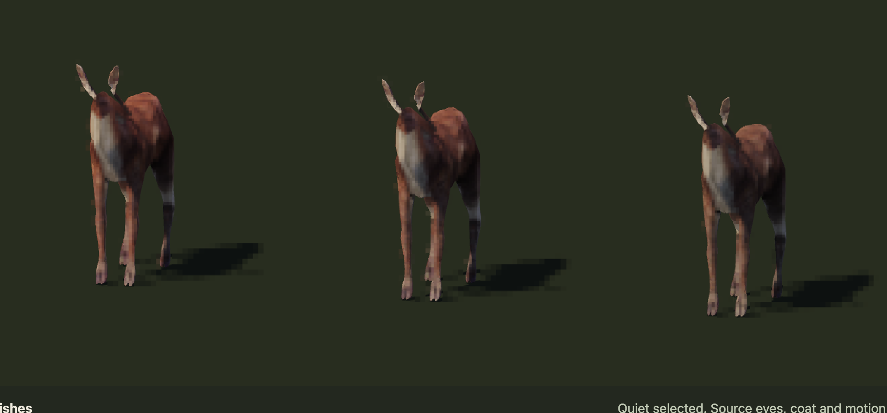
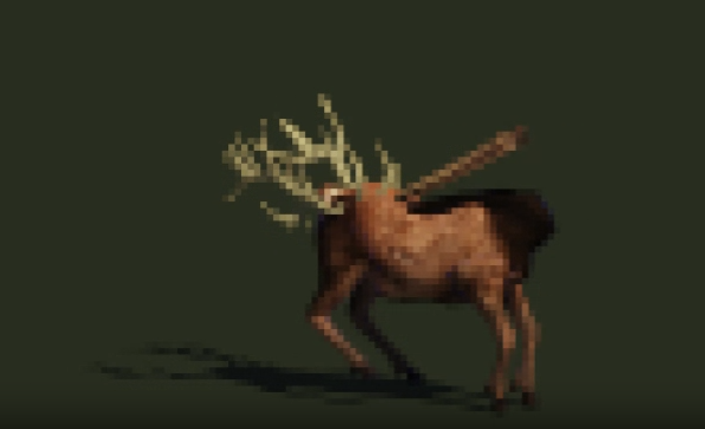
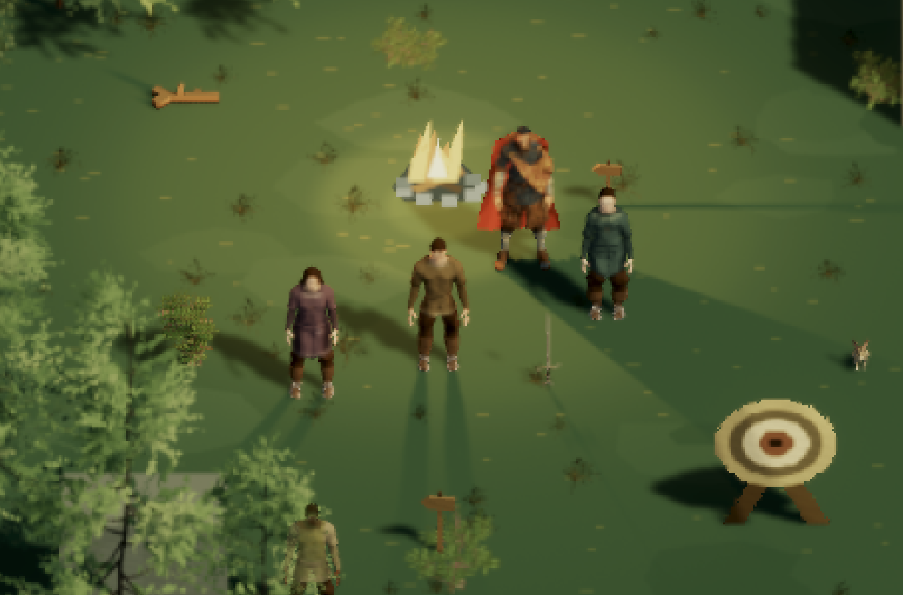

OPEN LEGEND · OCTOBER 17, 2026Better anatomy, quieter light
Corrections to the repeating bush, missing heads, oversized arrow feathers and broken animal motion. Three alternatives remain for every changed family. Quiet finishes are the working choices; the approved trees are preserved.
Source and verification notes · Previous study · Archive checksums
Ground light
Continuous illumination removes the broad firelight bands. Quieter pigment reduces patches that read as lighting. Tree assets, pixel density and body scale stay the same.
Heads and natural movement
Deer and stag retain their original anatomy and faces. A naming collision in the skin export is fixed. Ordinary travel now uses a four-beat walk; wolf stretching is replaced by a restrained standing idle.
Doe: three finishes, restored face and original idleDoe: complete walking cycles, quarter viewDoe: side view of all three finishesStag: face and antlers through the walkStag: three finishes and idleWolf: final closed walking loopWolf: three coats and quiet standing idle
Rooted plants and practical arrows
Each bush is one distinct source specimen. Separate columns are comparison alternatives; repeated cloned layers within each bush are removed. The middle arrow uses 46% feather width and 62% feather length, with the shaft and tip unchanged.

Berry bushes: clear, quiet (selected), weathered
Arrows: three restrained feather sizes; middle selectedIn the woodland
The actual world renderer uses the corrected choices. Movement is staged for this study; saved gameplay and travel rules are unchanged.
Walking deer at the game camera
Low sun and gathered berry comparison Rejected trials and supplied feedback
These remain visible so later work does not repeat the same mistakes. They are not current recommendations.

User feedback: copied bush tiers
User feedback: missing deer face
User feedback: distorted stag
User feedback: patchy lightRejected: correct head but bounding travelRejected: original wolf stretching idleEvery preserved capture and contact sheet (35)
These local comparisons do not claim universal zero shimmer, every animal action or a strict 60 Hz guarantee. Videos start only when you play them.